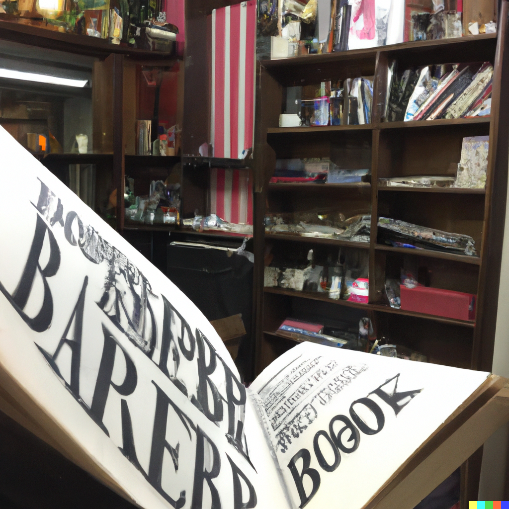

Entrar em uma barbearia e sentir a presença de diversos livros em cada canto do ambiente. Essa é a proposta de uma barbearia temática com o tema de livro. Ao entrar, o cliente é recebido por estantes cheias de livros de diversos gêneros, desde clássicos da literatura até best-sellers contemporâneos. A ideia é criar um ambiente aconchegante e acolhedor, onde as pessoas possam se sentir à vontade para ler um livro enquanto aguardam o seu corte de cabelo ou barba.
Além das estantes, a barbearia pode ter paredes decoradas com trechos de livros e obras de arte inspiradas em grandes clássicos da literatura. As cadeiras de corte de cabelo e barba também podem ter um design inspirado em livros, com cores e formas que remetam a capas de livros famosos. Para complementar a temática, os funcionários da barbearia podem usar aventais que pareçam capas de livros e oferecer aos clientes uma seleção de bebidas e snacks para acompanhar a leitura, como café, chá e petiscos.
Essa é uma ótima opção para quem procura um ambiente descontraído e cultural para cuidar do visual. Além de sair com o corte de cabelo ou barba em dia, o cliente também pode levar consigo um novo livro para casa, já que a barbearia pode ter uma pequena livraria com uma seleção de títulos para venda. Uma barbearia temática com o tema de livros é uma forma criativa e original de unir duas paixões: a leitura e o cuidado pessoal. É uma experiência única que encanta e inspira os clientes, fazendo com que se sintam parte de uma comunidade de amantes da literatura.
